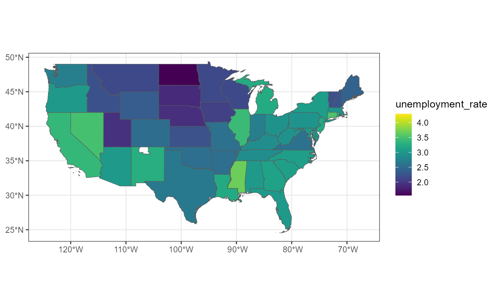
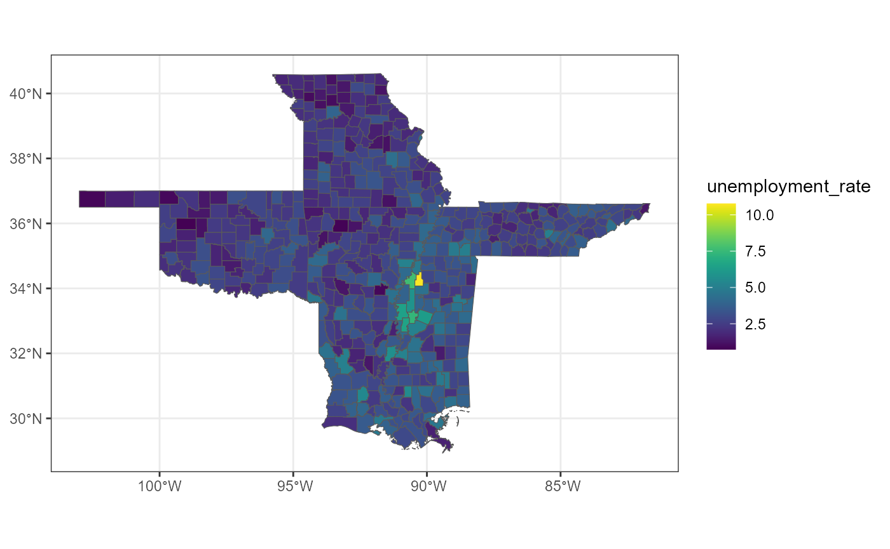

BIS620-final-project
BIS620-final-project.Rmd
# importing the created package
library(bis620.2023)
# importing all the other needed libraries
library(dplyr)
#> Warning: package 'dplyr' was built under R version 4.3.2
#>
#> Attaching package: 'dplyr'
#> The following objects are masked from 'package:stats':
#>
#> filter, lag
#> The following objects are masked from 'package:base':
#>
#> intersect, setdiff, setequal, union
library(sf)
#> Linking to GEOS 3.11.2, GDAL 3.6.2, PROJ 9.2.0; sf_use_s2() is TRUE
sf_use_s2(FALSE)
#> Spherical geometry (s2) switched off
library(ggplot2)
#> Warning: package 'ggplot2' was built under R version 4.3.2
library(viridis)
#> Loading required package: viridisLiteBIS620 final project
Background and motivation
Unemployment is a key factor which measures the social welfare and prosperity. At the same time, this measure is a key component of the monetary policy in the US. The US targets inflation, so the inflation spikes are usually are cured by raising the key rate. However, increase in the key rate tend to raise the unemployment, thus the US carefully analyses the dynamics of unemployment in order not to cause a spike in unemployment by conducting a contractionary monetary policy. This motivated me to study the US unemployment data.
Social vulnerability data provides a detailed US census data split by FIPS. I was motivated to work with the spatial data and analyse unemployment using such data. I was also interested in analysing the geographical dynamics of the unemployment. Specifically, whether the unemployment in some region can be affected by neighboring states or unemployment is more or less stable throughout the whole state with some state-specific mean value. So I set the goal of determining whether there is an impact of state on each other’s unemployment rates.
Research question
There are many ways to estimate how the states affect the unemployment in the other areas. Given that the have cross-sectional data (we could have at most the panel data with just several years which may not be enough for the panel data analysis), I came up with the idea to split the states onto counties and assume that the closer some county of the state to some other state, the more impact this other state should have on this county. Thus, inside some state I can compare the unemployment of the counties far away from this other state with the rates of the counties close to this other state and suggest the average difference in the unemployment rate between these two groups of counties is associated with the effect of this other state.
Thus, the broad research question is whether the states affect the unemployment in the other states. The more specific research question relevant to my work is whether the proximity to some state affects the unemployment rate.
Plan
In this work I plan to estimate the effect of all states on each county. Thus, I need the unemployment data on a county level. This is provided by the social vulnerability data. At the same time to do my analysis I need to calculate the distance of each county of the US to each state of the US. I am going to use geometry (coordinate) information provided by the social vulnerability data. In the next section I am going to provide in detail how I constructed the dataset for the modelling.
Data cleaning and exploration
Initial preprocessing and creating the package dataset
In this section I am going to explain how I used initial social vulnerability data we used in class to create my final modelling dataset.
First of all, I want to note that the initial dataset is too large to be deployed in Github so I first did some preprocessing to this data, saved preprocessed data and then I used this preprocessed data as the package dataset. You can see the preprocessing code below which I don’t run as I didn’t save the initial SVI2018_US_tract.shp data in the package due to its large memory (I cannot store such large files in GitHub).
# d_county <- read_sf(file.path("2018-data", "SVI2018_US_tract.shp")) |>
# mutate_if(is.numeric, ~ if_else(.x == -999, NA, .x)) |>
# select(STATE, COUNTY, E_TOTPOP, E_UNEMP) |>
# # no information about unemployment in Rio Arriba county, New Mexico
# # deleting this county from analysis
# filter(!is.na(E_UNEMP)) |>
# group_by(STATE, COUNTY) |>
# summarize(unemp = sum(E_UNEMP, na.rm = TRUE), pop = sum(E_TOTPOP, na.rm = TRUE))
#
# st_write(d_county, "SVI2018_US_tract_modified.shp")We can see that I first replaced -999 onto NA as we did in class as initially NA values were marked as -999. Then I selected only needed variables for the further analysis: that is the information about state, county, total population and total number of unemployed people for each FIPS. Note that I also keep geometry column. As this is sf data frame, geometry column is saved automatically, I don’t need to select it every time. Then I deleted one county Rio Arriba from the analysis because the data for this county was completely missing (in fact, the data was missing only in this county). The initial SVI2018_US_tract.shp has the information on the FIPS level, but I think that single FIPS are too small for the analysis (very large margin of errors for the unemployment estimates). Thus, I decided to use county-level data, so I grouped all the data by county. Finally, I saved the resulted dataset in a file SVI2018_US_tract_modified.shp and I made such dataset to be the package dataset and named it counties.
Further cleaning and initial visualization
# replacing the spaces with _ for the convenience
counties$STATE <- gsub(" ", "_", counties$STATE)
# state-level data
states <- counties |>
select(STATE, unemp, pop) |>
group_by(STATE) |>
summarize(unemp = sum(unemp), pop = sum(pop))
#> although coordinates are longitude/latitude, st_union assumes that they are
#> planar
# unemployment rate for each state
states$unemployment_rate <- states$unemp / states$pop * 100
# vizualization of the unemployment of the state-level
p2 <- geographical_visualizer(states |> filter(!(STATE %in% c('ALASKA', 'HAWAII'))),
'unemployment_rate')
p2
Let’s do some Exploratory data analysis. On the state-level, we can observe (figure above) that unemployment rate is quite stable ranging from 1.5 to 4%. In general the unemployment is slightly lower in the center-north states of the US. In general, the change in unemployment between neighbouring states is quite smooth. So we may obtain the results that there are some effect of states on the unemployment of the other states in our models. The unemployment in Utah seems to be unexpectedly much lower than in the neighboring states. I will make are more detailed analysis of this region later on.
Note, the function geographical_vizualizer() is the function of the package bis620.2023.
# county-level analysis
boxplot(counties$unemp / counties$pop * 100)
# percentage of outliers counties
dim(counties[counties$unemp / counties$pop > 0.05, ])[1] / dim(counties)[1] * 100
#> [1] 2.54696As for the counties, the range is more or less the similar (considering that there are 3000 counties VS 51 states, so slightly wider range is natural). There are some outliers (2.5%), but it’s also kinda natural for such variable bounded below.
# 51 states, not 50!!!
counties$STATE |> unique()
#> [1] "ALABAMA" "ALASKA" "ARIZONA"
#> [4] "ARKANSAS" "CALIFORNIA" "COLORADO"
#> [7] "CONNECTICUT" "DELAWARE" "DISTRICT_OF_COLUMBIA"
#> [10] "FLORIDA" "GEORGIA" "HAWAII"
#> [13] "IDAHO" "ILLINOIS" "INDIANA"
#> [16] "IOWA" "KANSAS" "KENTUCKY"
#> [19] "LOUISIANA" "MAINE" "MARYLAND"
#> [22] "MASSACHUSETTS" "MICHIGAN" "MINNESOTA"
#> [25] "MISSISSIPPI" "MISSOURI" "MONTANA"
#> [28] "NEBRASKA" "NEVADA" "NEW_HAMPSHIRE"
#> [31] "NEW_JERSEY" "NEW_MEXICO" "NEW_YORK"
#> [34] "NORTH_CAROLINA" "NORTH_DAKOTA" "OHIO"
#> [37] "OKLAHOMA" "OREGON" "PENNSYLVANIA"
#> [40] "RHODE_ISLAND" "SOUTH_CAROLINA" "SOUTH_DAKOTA"
#> [43] "TENNESSEE" "TEXAS" "UTAH"
#> [46] "VERMONT" "VIRGINIA" "WASHINGTON"
#> [49] "WEST_VIRGINIA" "WISCONSIN" "WYOMING"Note, there are 51 states in the data, not 50. Because for some reason the District of Columbia marked as the separate state. I decided not to change that.
Feature extraction for the model
Now it’s time to add distances between each county and each state to the data. I am going to find these distances using the coordinates. Specifically, I am going to find the distance between a county i (from state k) and some other state j in the following way: 1) find a center point of the county i using st_centroid() function applied to the geometry 2) Split the state j onto counties and find the center point of each county like I did in 1) 3) Calculate distances between center point of county i and each county of state j 4) Choose the smallest distance. This smallest distance will be treated as the distance between a county i and state j.
The function feature_extraction() of the bis620.2023 calculates the distance to every state for each county of the US. I am going to call it below
# adding the coordinate of the center of the county for each county
counties$centr_coord <- counties$geometry |> st_centroid()
#> Warning in st_centroid.sfc(counties$geometry): st_centroid does not give
#> correct centroids for longitude/latitude data
# adding unemployment rate for each county
counties$unemployment_rate <- counties$unemp / counties$pop * 100
# applyting feature_extraction() function and removing all
# geometry columns with coordinate (we don't needed them for the modelling anymore)
counties_features <- feature_extraction(counties) |>
st_drop_geometry() |>
select(-centr_coord)
# observing the updated dataset
counties_features |> head(7)
#> # A tibble: 7 × 56m
#> STATE COUNTY unemp pop unemployment_rate dist_to_ALABAMA dist_to_ALASKA
#> <chr> <chr> <dbl> <dbl> <dbl> <dbl> <dbl>
#> 1 ALABAMA Autauga 1065 55200 1.93 0 2762765.
#> 2 ALABAMA Baldwin 4343 208107 2.09 0 2891480.
#> 3 ALABAMA Barbour 918 25782 3.56 0 2885360.
#> 4 ALABAMA Bibb 658 22527 2.92 0 2695682.
#> 5 ALABAMA Blount 909 57645 1.58 0 2627946.
#> 6 ALABAMA Bullock 490 10352 4.73 0 2847930.
#> 7 ALABAMA Butler 567 20025 2.83 0 2836859.
#> # ℹ 49 more variables: dist_to_ARIZONA <dbl>, dist_to_ARKANSAS <dbl>,9m
#> # dist_to_CALIFORNIA <dbl>, dist_to_COLORADO <dbl>,
#> # dist_to_CONNECTICUT <dbl>, dist_to_DELAWARE <dbl>,
#> # dist_to_DISTRICT_OF_COLUMBIA <dbl>, dist_to_FLORIDA <dbl>,
#> # dist_to_GEORGIA <dbl>, dist_to_HAWAII <dbl>, dist_to_IDAHO <dbl>,
#> # dist_to_ILLINOIS <dbl>, dist_to_INDIANA <dbl>, dist_to_IOWA <dbl>,
#> # dist_to_KANSAS <dbl>, dist_to_KENTUCKY <dbl>, dist_to_LOUISIANA <dbl>, …9mSo now for each county in the US we have variables dist_to_ALABAMA, dist_to_ALASKA, …, dist_to_WYOMING, which indicate the distance to the specified state in meters.
Preparing y and X for the modelling
As for the y variable it is unemployment rate (or centered unemployment rate), so not so many transformation needed. As for the X variables, I propose some transformations for the better fit of models and interpretation which are not easy to understand at first glance. In fact, I am going to introduce the proximity variable proximity_to_STATE (where STATE is any of the 51 states) defined as: \[ proximity\_to\_STATE = log(300001) - log(1 + min(distance\_to\_STATE, 300000)) \] What is the interpretation of such variable? First of all, if the distance is more than 300 km or more, I consider this distance is ‘not close at all’ so proximity is zero. If the distance is less than 300 km, then the proximity variable is positive and the distance is zero then the proximity is maximum = log(300001). Note that I included the log transformation as I believe that the constant effect of % change is more likely than the constant effect of absolute value change (i.e change in unemployment if distance changes from 20 to 40 is likely to match the change in unemployment if distance changes from 200 to 400 rather than match the change if distance changes from 200 to 220). Then the last part is minus sign. This is for interpretation and making proximity the variable such that the bigger it is the bigger the rate of proximity (i.e. the closer the objects) are.
Note that if the county is in the state, for example, ALABAMA, then proximity_to_ALABAMA is set to 0. This is done to separate the effect of other states and the effect of the state in which the county is in. The effect of the “home state” will be accounted for by creating a dummy variable or by subtracting the mean unemployment of the state from the unemployment of the county.
The function transformation_modeling() of the bis620.2023 package replaces distance_to_STATE variables onto proximity_to_STATE variables and additionally adds the dummy variable for each state (will be helpful in the modeling).
# generating features for X
df_model <- transformation_modeling(counties_features)
df_model |> head(7)
#> # A tibble: 7 × 106m
#> # Groups: STATE [1]
#> proximity_to_ALABAMA proximity_to_ALASKA proximity_to_ARIZONA
#> <dbl> <dbl> <dbl>
#> 1 0 0 0
#> 2 0 0 0
#> 3 0 0 0
#> 4 0 0 0
#> 5 0 0 0
#> 6 0 0 0
#> 7 0 0 0
#> # ℹ 103 more variables: proximity_to_ARKANSAS <dbl>,9m
#> # proximity_to_CALIFORNIA <dbl>, proximity_to_COLORADO <dbl>,
#> # proximity_to_CONNECTICUT <dbl>, proximity_to_DELAWARE <dbl>,
#> # proximity_to_DISTRICT_OF_COLUMBIA <dbl>, proximity_to_FLORIDA <dbl>,
#> # proximity_to_GEORGIA <dbl>, proximity_to_HAWAII <dbl>,
#> # proximity_to_IDAHO <dbl>, proximity_to_ILLINOIS <dbl>,
#> # proximity_to_INDIANA <dbl>, proximity_to_IOWA <dbl>, …9mIn addition to that I am adding another variable which will be useful in modelling
df_model$unemp_rate_centered <- df_model$unemployment_rate - df_model$avg_state_unempNow df_model has all the variables for the modelling
Analysis
Now let us move on to the modelling. I am going to propose two versions of the linear models. In each of the models the proximity variables will be present. Note that the significant coefficient to the proximity variable indicates that the proximity to some other states is associated with the unemployment, so we can propose the hypothesis that some other state affect the unemployment in the other state by being close to some counties of the state.
So let’s define and fit such models. In model 1 y variable is unemployment_rate and X variables are all proximity variables and state dummy variables. In model 2 y variable is unemp_rate_centered and X variable are all proximity variables and constant. Note that the final versions of the model will contain only selected variables. The variables will selected using forward selection and using AIC metric. In both cases the null model will be y ~ 1. Note the forward selection is done by forward_selection_linreg function of the package bis620.2023. Now let’s fit both these models.
# defining X and y variables for the models
X_cols_model1 <- colnames(as.data.frame(df_model) |> select(-c(STATE, unemployment_rate)))[1:100]
y_col_model1 <- "unemployment_rate"
X_cols_model2 <- colnames(df_model)[1:49]
y_col_model2 <- "unemp_rate_centered"
# getting model 1 using the initial variables and forward selection
fs_df1 <- forward_selection_linreg(df_model, X_cols_model1, y_col_model1)
# choosing the optimal model based on aic
argmin_ind1 <- which.min(fs_df1$aic)
# generating the formula and creating the model object
formula1fs <- paste(sort(fs_df1$var[2:argmin_ind1]), collapse = " + ")
formula1fs <- paste(y_col_model1, '~', formula1fs)
model1fs <- lm(formula1fs, data = df_model)
# getting model 2 using the initial variables and forward selection
fs_df2 <- forward_selection_linreg(df_model, X_cols_model2, y_col_model2)
argmin_ind2 <- which.min(fs_df2$aic)
formula2fs <- paste(sort(fs_df2$var[2:argmin_ind2]), collapse = " + ")
formula2fs <- paste(y_col_model2, '~', formula2fs)
model2fs <- lm(formula2fs, data = df_model)Now we have 2 final models. Let us analyse the results and interpretations in the next section
Interpretation and conclusions
Interpretation
Let’s look at the summary of the models.
summary(model1fs)
#>
#> Call:
#> lm(formula = formula1fs, data = df_model)
#>
#> Residuals:
#> Min 1Q Median 3Q Max
#> -3.9784 -0.5583 -0.0831 0.4582 8.5508
#>
#> Coefficients:
#> Estimate Std. Error t value Pr(>|t|)
#> (Intercept) 2.54219 0.04284 59.339 < 2e-16 ***
#> in_ALABAMA 0.46484 0.14502 3.205 0.001363 **
#> in_ALASKA 2.09510 0.18275 11.464 < 2e-16 ***
#> in_ARIZONA 0.96801 0.25628 3.777 0.000162 ***
#> in_CALIFORNIA 0.75603 0.13270 5.697 1.33e-08 ***
#> in_COLORADO 0.26176 0.13887 1.885 0.059527 .
#> in_CONNECTICUT 0.52955 0.34498 1.535 0.124879
#> in_FLORIDA 0.29825 0.12424 2.400 0.016432 *
#> in_GEORGIA 0.52507 0.12911 4.067 4.88e-05 ***
#> in_HAWAII -0.67106 0.43000 -1.561 0.118723
#> in_ILLINOIS 0.31282 0.11666 2.681 0.007372 **
#> in_KANSAS -0.58639 0.11185 -5.243 1.69e-07 ***
#> in_KENTUCKY 0.87413 0.16263 5.375 8.22e-08 ***
#> in_MICHIGAN 0.57811 0.11657 4.959 7.45e-07 ***
#> in_MINNESOTA -0.53675 0.11960 -4.488 7.46e-06 ***
#> in_MISSISSIPPI 1.09531 0.12392 8.838 < 2e-16 ***
#> in_MONTANA -0.53850 0.13804 -3.901 9.79e-05 ***
#> in_NEBRASKA -0.73962 0.13247 -5.583 2.57e-08 ***
#> in_NEW_JERSEY 0.73604 0.21303 3.455 0.000558 ***
#> in_NORTH_CAROLINA 0.84984 0.16256 5.228 1.83e-07 ***
#> in_NORTH_DAKOTA -0.86990 0.15436 -5.636 1.90e-08 ***
#> in_OREGON 0.44457 0.16882 2.633 0.008497 **
#> in_SOUTH_CAROLINA 0.66090 0.15668 4.218 2.54e-05 ***
#> in_TENNESSEE -0.26352 0.13993 -1.883 0.059770 .
#> in_TEXAS -0.05109 0.07644 -0.668 0.503980
#> in_UTAH -0.74203 0.19468 -3.812 0.000141 ***
#> in_WEST_VIRGINIA 0.45537 0.16783 2.713 0.006698 **
#> proximity_to_ARIZONA 1.42840 0.33275 4.293 1.82e-05 ***
#> proximity_to_ARKANSAS 0.36965 0.06843 5.402 7.09e-08 ***
#> proximity_to_CALIFORNIA 0.37412 0.20379 1.836 0.066483 .
#> proximity_to_DISTRICT_OF_COLUMBIA -0.19322 0.08665 -2.230 0.025832 *
#> proximity_to_FLORIDA 0.17852 0.11220 1.591 0.111701
#> proximity_to_ILLINOIS -0.17852 0.05475 -3.260 0.001124 **
#> proximity_to_INDIANA -0.10225 0.07143 -1.431 0.152412
#> proximity_to_KANSAS -0.32103 0.07379 -4.351 1.40e-05 ***
#> proximity_to_KENTUCKY 0.18380 0.06497 2.829 0.004702 **
#> proximity_to_MINNESOTA -0.46498 0.07236 -6.426 1.52e-10 ***
#> proximity_to_MISSISSIPPI 0.40862 0.07417 5.509 3.91e-08 ***
#> proximity_to_MONTANA -0.19641 0.14905 -1.318 0.187673
#> proximity_to_NEBRASKA -0.21655 0.07799 -2.777 0.005525 **
#> proximity_to_NEW_JERSEY 0.25853 0.08173 3.163 0.001576 **
#> proximity_to_NEW_MEXICO -0.28554 0.14099 -2.025 0.042928 *
#> proximity_to_NORTH_CAROLINA 0.26454 0.06553 4.037 5.55e-05 ***
#> proximity_to_OHIO -0.18420 0.06653 -2.768 0.005666 **
#> proximity_to_SOUTH_CAROLINA -0.21868 0.09926 -2.203 0.027656 *
#> proximity_to_SOUTH_DAKOTA -0.22724 0.09666 -2.351 0.018795 *
#> proximity_to_TENNESSEE -0.33211 0.07065 -4.701 2.70e-06 ***
#> proximity_to_UTAH -0.45228 0.18959 -2.386 0.017112 *
#> proximity_to_VIRGINIA 0.11810 0.06956 1.698 0.089667 .
#> proximity_to_WYOMING -0.15036 0.13578 -1.107 0.268218
#> ---
#> Signif. codes: 0 '***' 0.001 '**' 0.01 '*' 0.05 '.' 0.1 ' ' 1
#>
#> Residual standard error: 0.9567 on 3091 degrees of freedom
#> Multiple R-squared: 0.2866, Adjusted R-squared: 0.2753
#> F-statistic: 25.34 on 49 and 3091 DF, p-value: < 2.2e-16
summary(model2fs)
#>
#> Call:
#> lm(formula = formula2fs, data = df_model)
#>
#> Residuals:
#> Min 1Q Median 3Q Max
#> -3.9144 -0.5575 -0.0811 0.4564 8.9394
#>
#> Coefficients:
#> Estimate Std. Error t value Pr(>|t|)
#> (Intercept) 0.02258 0.02396 0.942 0.34616
#> proximity_to_ARIZONA 0.96878 0.32753 2.958 0.00312 **
#> proximity_to_ARKANSAS 0.29845 0.06177 4.832 1.42e-06 ***
#> proximity_to_DISTRICT_OF_COLUMBIA -0.23196 0.08379 -2.768 0.00567 **
#> proximity_to_FLORIDA 0.19601 0.08538 2.296 0.02176 *
#> proximity_to_GEORGIA -0.11551 0.05711 -2.023 0.04320 *
#> proximity_to_KANSAS -0.15486 0.06162 -2.513 0.01202 *
#> proximity_to_MINNESOTA -0.16706 0.06627 -2.521 0.01176 *
#> proximity_to_NEBRASKA -0.10251 0.06555 -1.564 0.11793
#> proximity_to_NEW_JERSEY 0.11473 0.07807 1.470 0.14179
#> proximity_to_NEW_MEXICO -0.23341 0.12474 -1.871 0.06143 .
#> proximity_to_NORTH_CAROLINA 0.12397 0.05250 2.361 0.01828 *
#> proximity_to_OHIO -0.08121 0.05211 -1.558 0.11922
#> proximity_to_SOUTH_CAROLINA -0.16177 0.06660 -2.429 0.01520 *
#> proximity_to_TENNESSEE -0.12818 0.04854 -2.641 0.00832 **
#> proximity_to_VIRGINIA 0.13035 0.05087 2.562 0.01044 *
#> ---
#> Signif. codes: 0 '***' 0.001 '**' 0.01 '*' 0.05 '.' 0.1 ' ' 1
#>
#> Residual standard error: 0.96 on 3125 degrees of freedom
#> Multiple R-squared: 0.02606, Adjusted R-squared: 0.02139
#> F-statistic: 5.575 on 15 and 3125 DF, p-value: 2.231e-11We can see that in both models the proximity coefficients are close to each other as they should be since the model specifications are similar. The largest coefficient in absolute value among coefficients to the proximity variables is the one to the proximity_to_ARIZONA variable. If taking the second model the interpretation is as follows: if we are in the range 100-300 km from Arizona, if we get exp(1) times closer to Arizona (keeping the same distance from other states or the other states are too far away and keeping the same state where are at) the unemployment rate rises by 0.96 percentage points. The same interpretation applies to other proximity variables, just replace the state and the coefficient value. Overall, there are several significant coefficients to proximity variables, so it can be suggested that the distance to the certain state affects the unemployment which indicates the association between unemployment of the county and the one in the neighbouring state.
Visual interpretation
In general, the positive (negative) significant coeffient imply that as we get closer to some state the counties’ unemployment on average increases (decreases). Let’s check this claim using visualization. Let’s first check that for proximity_to_ARIZONA:
counties_flt <- counties |>
filter(STATE %in% c('CALIFORNIA', 'ARIZONA', 'NEVADA', 'UTAH', 'COLORADO', 'NEW_MEXICO'))
p1 <- geographical_visualizer(counties_flt, 'unemployment_rate')
p1
As for Arizona, it seems that only in New Mexico the unemployment rises as the counties are closer to Arizona, the unemployment increases. Maybe it’s also the case for California, the unemployment there is unstable there in general, so it’s hard to tell. So in some states some increase in unemployment with the increase in proximity may be seen, but it’s definitely not seen fo the states like Utah and Colorado. For these states unemployment does not rise with the proximity to Arizona.
Let’s take the second example, let’s take proximity_to_ARKANSAS which was also one of the largest and it’s extremely significant in both models.
counties_flt2 <- counties |>
filter(STATE %in% c('ARKANSAS', 'OKLAHOMA', 'LOUISIANA', 'MISSOURI',
'MISSISSIPPI', 'TENNESSEE'))
p2 <- geographical_visualizer(counties_flt2, 'unemployment_rate')
p2 Well, as for the Arkansas, it’s quite clearly seen that the counties become slightly brighter in Oklahoma, Tennessee (just the border counties become brighter), and Misouri as they get closer to Arkansas. The same can be said for Mississippi. In Lousiana no “Arkansas effect” is observed. So it can be suggested that proximity to Arkansas on average increases the unemployment rate in the counties of the other states.
Conclusion
Spatial data analysis was made to estimate the impact of the certain state onto unemployment in the counties of the neighboring states which are close to this certain state. Based on the presence of the significant variables it can be suggested that some states indeed may cause the increase or decrease the unemployment in the nearby counties from the other states. Such analysis can be helpful in the general analysis of the unemployment dynamics in the US. Some other models, panel data (with many periods, to study the dynamics of unemployment) and other spatial data techiques can be potentially used to make a further analysis and more robust results with more specific suggestions on how to control the unemployment rate in the US